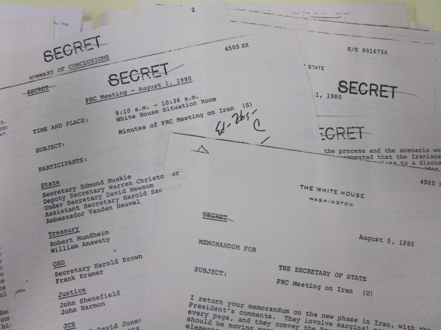

The Dissertation
The project examines how U.S. policy, notably through arms sales, contributed to a lasting yet cautious peace between Egypt and Israel—a peace that remained a fixture in the region. Carter, whose administration was the first to champion a foreign policy rooted in human rights, initially promoted a multilateral vision that recognised Palestinian national claims within a broader framework. Yet, American policy ultimately shifted toward a narrower, bilateral agreement underpinned by military support for Egypt. This project explores the complex, often contradictory relationship between military imperialism, human rights, and peace, where weapons were deployed as instruments of diplomacy. I trace how the U.S. moved from Carter's broader vision to a limited peace, questioning if American policy and bureaucratic inertia, particularly around arms sales, inevitably led to the bilateral peace agreement. This project explores how the U.S. reliance on arms sales as a diplomatic tool linked military support inextricably with peace efforts, resulting in a "cold peace" that has remained entrenched in the region.
The historical importance of this moment lies in its exposure of the limits of liberal internationalism. Even at a time celebrated by scholars as the heyday of human rights discourse, this case reveals the constraints placed on normative politics by the architecture of American power. What appears as a contradiction – arms deals and militarisation in the name of peace and friendship – is better understood as the product of a militarised international order that shapes not only strategic choices but moral imagination. This is not a uniquely Carter-era problem. In today’s global political economy, the ascendance of right-wing populist leaders – from Netanyahu to Trump – have all but extinguished the remnants of the twentieth-century human rights regime. In this moment, the international human rights regime is not just faltering in practice, but eroding as an imaginative horizon. Rather than mourning its decline, we must ask whether the regime, as it is nostalgically remembered, ever truly existed at all.
Archival Research
I conducted archival research in Atlanta Georgia, College Park Maryland, and New York City. Beginning at the Jimmy Carter Library (JCL) in Atlanta; I went for three weeks in June to investigate the Carter Administration’s approach to peace negotiation and diplomacy in the Middle East. I focused on declassified documents on the Administration’s foreign policy, including records on arms sales, newspaper clippings and journalism, meeting memos, agendas, draft treaties, and communications. The Presidential Daily Briefs and the personal correspondence between key U.S. actors shed light on the internal decision-making processes behind U.S. mediation and diplomacy. I began to get a feel for government thought and behaviour; helping me imagine a map of the actions and actors that played out to create this historical moment.
In New York, I consulted the American Jewish Committee, and the American Jewish Historical Society Archives to gain some Israeli and Jewish American perspective on American intervention in the Middle East. I found internal Israeli debates from the Mapam party in Jerusalem following the Geneva Conference in 1974 that proved particularly useful in understanding Israel's dilemmas with diplomacy and existential fear.
What concluded my archival research in the U.S. this summer, was my trip to College Park Maryland, at the National Archive and Record Administration (NARA). I explored U.S. foreign policy documents, memorandums and communications on President Carter’s human rights commitments as well as the Middle East peace process. It was in an archival collection at the NARA where I found multiple files on the aid package that explicity linked American financial and military assistance to the implementation and durability of the peace agreement.
